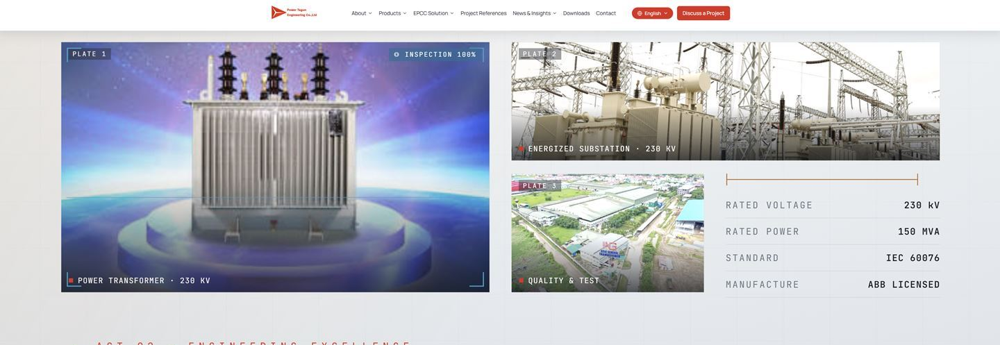
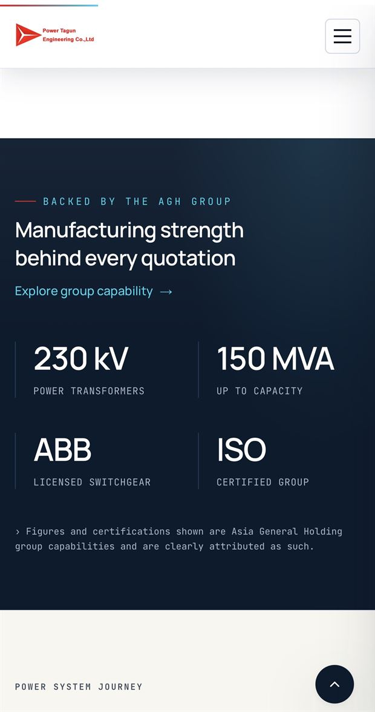
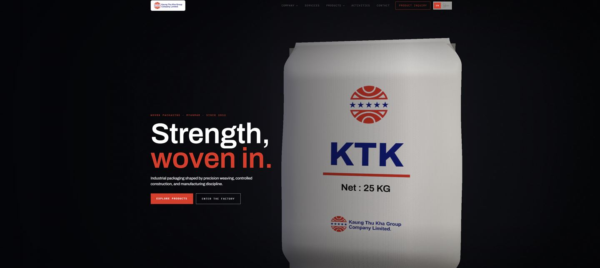
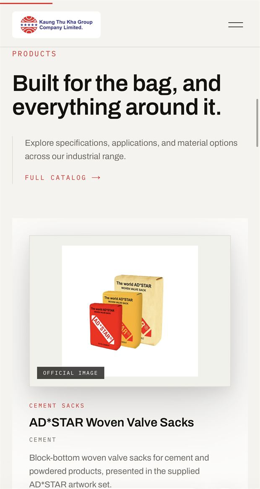

Landing pages
A single, tailored page — built fast and built well. For campaigns, launches, and brave small starts.
No templates. No clones. A small studio that shapes each project from seed to full bloom — and the gardens we've grown along the way.
A single, tailored page — built fast and built well. For campaigns, launches, and brave small starts.
A presence in full sway — premium multi-page experiences with bespoke motion and a considered system.
A bespoke garden, fully tended — complete identity, component library, motion language, and long-form handover.
Listen first. Map the terrain. Understand the goal before a single pixel is placed.
Architecture, wireframes, and direction. The structure beneath the beauty.
Pixel-perfect UI and meticulous engineering. Where the bloom takes its shape.
Staged launch, tuned, and handed over. The garden, open to the world.


Our largest build to date — a full corporate site for a Myanmar electrical engineering group: product supply, procurement, and EPC turnkey delivery, with a project-reference library buyers can actually search.


A manufacturer site for Kaung Thu Kha Group: cement sacks and PP woven bags off European STARLINGER lines, told through the weave itself.
A stock and portfolio tracker that brings a calm, focused interface to complex market information.
An independent simulation exploring the Lunar Gateway orbit through a mission-control interface.
Tell us about your project. We'll respond within 48 hours with thoughts, questions, and a starting direction.
Begin a conversation